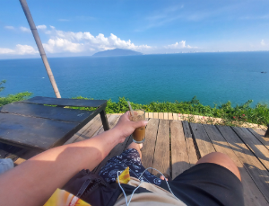

|  | Solitude"Life is a journey, and if you fall in love with the journey, you will be in love forever." - Peter Hagerty.Solitude. Being self-aware I know it can sometimes lead to moments of loneliness, , it can get lonely at times but its worth the experience. |
Benefits of traveling solo
- "No schedule to follow!"
- The individuals you meet and encounter in life have the potential to become your lifelong friends.
- Indulge in any food that you desire, as picky eaters are not welcome here! It's the inexpensive street food that often holds the most flavor and satisfaction.
- This is a once-in-a-lifetime experience that can easily become addictive, even after just one try.
What I learned during my time alone
- Avoid relying on others as your sole source of support and instead, use it to supplement your own efforts
- You become your truest self, embodying who you are.
- Experiencing the happiness of people in rural villages can bring a greater sense of purpose and significance to life, especially when they seem to be happier than the majority of people you know.
- The best part of my trip was getting lost!